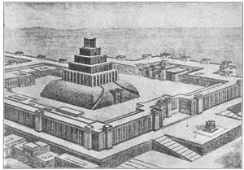
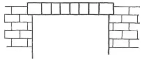
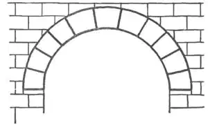

62
MUD PIE PALACES AND TEMPLES
土饼宫殿和神庙

IN THE Bible, Chaldeans means the wise men and priests of what you and I call the Two River Country. They were men of Chaldea, which was one of the countries in the Two River Country along with Assyria and Babylonia. Assyria was a little farther north than Babylonia and Chaldea, but all three countries were very much alike and sometimes all three were under one king.
The Two River Country was watered by a network of canals between the Two Rivers and so was very fertile. The finest crops in all the world grew there and many large cities were built on the plains. Nowadays these plains are dry and desert-like, for the canals have not been taken care of and without water the crops fail to grow. On the plains one can now see big mounds or low hills where once the palaces and cities stood. These are all that is left of the handsome buildings of this ancient land, and they crumbled into dust because they were made of mud , as I told you once before. Imagine a king’s palace made of mud—mud baked in the sun like a mud pie! But you remember, do you not, that these Two River people covered their mud walls with glazed tiles and slabs of stone? The tiles were bright colored like bathroom tiles and the slabs of stone were carved in low relief so that even a mud palace became a handsome building.
But with only mud bricks the Two River builders were handicapped. They could not make mud-brick houses more than one story high. The houses would have tumbled down had they been higher. The walls were not strong enough to hold a second story. As a one-story house would not look very palace-like, when these people built a palace they first made a hill with a flat top or platform of dried mud and placed the palace on that. The palace then seemed much higher.
The sides of the platform were very steep—almost, if not quite, straight up and down. So to reach the top of the platform a slanting roadway called a ramp was built against its side.
As mud walls were so crumbly, the builders had to make their palace walls very, very thick. Some were as much as twenty feet thick. The sun was very hot in that part of the world and these thick walls helped to keep out the heat. Further to keep out the heat, the Two River people made their palaces without windows, so the rooms were lighted only by lamps.
We usually think of palace rooms as large and spacious, but the rooms in the Two River mud palaces were very small. They had to be because of the lack of stone and of wooden beams long enough to stretch across a wide space. In a palace, however, the builders made up for the smallness of the rooms by having a great number.
The temples which the priests built were made of mud bricks, too, but the one single platform for a foundation was not enough, so they built several, one on top of another. This gave the effect of a terraced pyramid, as each platform was set back from the one below it. In New York and some other cities to-day, architects are again planning tall buildings in this ancient way—the stories stepped back, as we call it.
You remember the Bible story of the flood—how the Babylonians built a tower called the Tower of Babel so that in case of another flood the people could climb to the top and escape drowning? Well, the Tower of Babel was not built straight up and down. It was a stepped pyramid such as I have described. It was like a set of blocks of different sizes piled one on top of another, each one a little smaller than the one below. Each was reached from the other by a ramp. On the topmost and smallest platform was placed the temple or shrine for the idol.

No.62-1 ASSYRIAN TEMPLE: RESTORATION （亚述神庙复原）
The Tower of Babel was supposed to have had seven giant steps or terraces. Seven was a magic number. Each step was in honor of one of the heavenly bodies. The topmost terrace, in honor of the sun, was covered with gold. The next, in honor of the moon, was covered with silver. Those below, in honor of each of the five planets, were painted in different colors.
The Chaldeans were the first to make a study of the stars and their movements in the sky, and they gave many of the stars names which we still use. We call such people astronomers. The Chaldean astronomers used the temple on top of these terraced pyramids or towers for an observatory—that is, a place from which to observe the heavenly bodies. That is why the Chaldeans came to be known as the wise men of the Two River Country.
There is an old saying that “necessity is the mother of invention.” That means if you haven’t what you need, you will invent something else to take its place. It was necessity that made the Assyrians invent one of the most important ways of building that we use to-day. This way of building is what is called the Principle of the Arch.
The Assyrians had no stones long enough to stretch from one side to the other of a large room to form the ceiling, so they had to invent a way of covering a room or a doorway with small pieces of stone or bricks. You might call an open doorway an arch, but one piece of stone or wood laid across an opening does not make an arch. An arch must be made of several pieces.
Now, you can’t cement bricks or small stones together strongly enough to make them into one piece that will stretch from wall to wall and not fall.

No.62-2
But if you arrange the stones in a certain way, they will not fall. This is the way, with the stones set in a curve or half circle and this is an arch.

No.62-3
By this simple arrangement, the stones are made to stay in place, not because they are stuck together, for they will stay in place whether cemented or not, but because each stone, pressing downward, trying to fall through, presses against the stones at each side and they are all so tightly jammed together that none can squeeze through and fall. The heavier the weight on top of the arch, the more firmly are the stones held in place, provided there is no way for them to push over the side wall and widen the space.
Try to hold half a dozen upright books in your hands by squeezing them together. If you can squeeze them tight enough, they’ll not slip, but release your pressure and they fall. So to prevent the stones of an arch from slipping, the side walls of arches were made very heavy and thick.
Not only doorways but whole rooms could be covered in this same way. When a room was covered, the arch became what was called a barrel vault, as the ceiling of such a vaulted room was like half a barrel. If the room itself had circular walls, the ceiling became a bowl turned upside down. We call the bowl a dome, but the principle was the same—the Principle of the Arch.
While an arch or vault or dome was being built, it was necessary to have something to build the stones upon, for until the last stone was in place, the arch would not hold. Usually a temporary framework of wood, shaped like a half circle and called “centering,” was therefore placed across from one wall to the other and on top of this the arch was built, starting at each side and working toward the top. When the last stone at the top, which was called the keystone, was put in place, then, and not until then, could the centering be knocked down and the arch would stand alone. In Assyria, however, there was so little wood for making centering that few arches or vaults were made and it was not until a thousand years or so later that arches were frequently used.
In Egypt, the pyramids are still standing because they were made of stone and built in the most lasting shape there is. They cannot topple over or fall down. In the Two River Country not a single palace or temple is still standing. The bricks of which they were built have crumbled into dust again, so that all that is now left are the mounds of earth overgrown with weeds.
It seems impossible to believe that our great cities of to-day may ever become just heaps of dirt, grown over with weeds like the old Assyrian and Babylonian cities, or that the millions of people now living in the houses and thronging the streets should ever disappear. Yet the people who lived in Assyria probably thought the same thing.
【中文阅读】
在《圣经》中，迦勒底人指的是我们所称的两河流域国家的智慧人和祭司。迦勒底与亚述、巴比伦一样是属于两河流域的一个国家。迦勒底一带的人称作迦勒底人。 亚述在巴比伦和迦勒底的北边一点，但这三国都非常相似，三个国家有时共同效忠于一个君主。
幼发拉底河和底格里斯河的运河系统遍布两河流域，这三国的土地受此荫蔽而肥沃。这里生长着世界上最好的谷物，许多大城建在这里的平原上。由于运河缺乏管理，谷物缺乏灌溉，现在这些平原已没有了往日的富饶，有些土地甚至开始沙化，谷物也没有了往日的生机。平原上，今天看到的只是高大的土坡和低矮的山丘，往日的城市和宫殿已不复存在。古代大地上曾经繁华的建筑已在岁月中坍塌成土，因为它们都是“土坯”建筑物，正如我之前所提。想象一下用土坯为材料建成的王宫吧——土坯经过太阳的烘烤，简直就变成土饼了。两河流域的人们是用油光发亮的瓷砖和石片贴在他们的土坯墙上的，但你还记得不记得呢？这些瓷砖颜色和浴室里的一样鲜亮，而且每一块石片都经过精雕细刻，所以，即便是以土坯为材料的宫殿也变得富丽堂皇了。
但是两河流域的建筑师们只能用土坯，这就把他们给限制住了，因为用土坯房最多只能盖到一层楼那么高。再往上盖，房子就会坍塌。墙壁承受不了两层楼的重量。但只有一层楼高的房子怎么看也不像宫殿，因此宫殿建造者在建造时，首先会用干土堆积一个平顶小土丘或平台，然后再在上面建造宫殿。这样使宫殿看起来会高大许多。
平台的周边都非常陡峭，几乎与地面垂直。为了能到达平台顶端，又建了一条斜道，紧靠平台。
由于土墙特别容易破损，建造者不得不把宫殿的墙壁造得厚厚的。有些墙壁甚至有20英尺厚。这个地区太阳照射得也特别厉害，厚厚的墙壁正好有助于隔热。为了进一步隔热，两河流域的人就没在宫殿上开凿窗户，殿内照明全靠灯火。
我们常常把宫殿里的房间想象得又大又宽敞，可是两河流域的土坯宫殿里的房间却非常狭小。由于没有足够多的石块和足够长的梁木，房屋的延展度便受到了限制，所以，建造者就在宫殿里多建造些房间，来弥补房间狭小这一缺憾。
祭司们建造的神庙也是以土砖为材料。但仅仅建造一个平台显然不够，因此他们就建立了很多平台，一个叠一个。因为每一层平台都比它底下的平台靠后一点，于是便有了梯田式的金字塔。当今在美国纽约和其他城市，建筑师们仍会采用这种古老的方式来建造高层建筑——如我们所称，每层建筑都比底下一层靠后一点。
你一定还记得《圣经》里的洪水故事吧。讲的是巴比伦人怎样建造一座叫做“巴别”的塔，使人能在下一次洪水泛滥时登塔避险。巴别塔并不是垂直的，而是像金字塔那样带有台阶的，像我前面所描述的那样。大大小小的石阶一层覆盖一层，每层石阶都比下面一层略小一点。每级台阶都由斜道相连。最顶层也是最小的台阶上安置了一座圣堂或圣坛，供奉偶像。
巴别塔由七层巨型台阶构成。七是一个迷人的数字。每一层都是为了纪念一个天体。顶层纪念太阳，涂了金色。往下一层纪念月亮，涂了银色。再往下各层则分别纪念五大行星，涂了不同的颜色。
迦勒底人是世界上最早研究行星及其运行的先驱。他们为许多行星的命名一直沿用至今。我们称他们为天文学家。迦勒底天文学家们用梯状金字塔顶或别的塔顶上的圣堂作观察台，研究星象。这就是为什么迦勒底人被称作两河流域的智者。
有句俗语是这样说的，“需要是发明之母”。意思是说，如果你需要的东西暂时还没有，你就要发明某种东西来替代。正是需求使得亚述人发明了一种最重要的建筑方式，沿用至今。这种建筑方式叫做拱形原则。
亚述人找不到足够长的石头来为大房间做延展宽阔的天花板，他们就发明了一种方法，用小石块或砖块来做房间的天花板或门道。也许你会把宽敞的门道称作拱门，但是把一块砖或一根木横放在道口并不形成拱门——必须有好几块才能建成。
然而，要把小石块或砖块牢牢地粘放在一起，形成一个整体，以保证拱顶能从墙的一边伸展到另一边而不掉下来，是不可能办到的。
但如果将这些石块以某种方式排放，它们就不会掉下来。这种方式就是，将这些石块摆成弧形或半圆状，就形成了“拱顶”。
通过这种简单的排放，石块就会牢牢地待在一处，不是因为它们被粘在一起，其实它们之间无论涂没涂粘土，它们都不会掉下来，那是因为每一个石块一边在往下挤压，一边又在相互挤压，一个挤一个，紧紧挤在一起，没有哪块能挤出来往下掉。只要不让石块把边墙推倒，不使空间扩展，拱门顶上的石块受力越大，稳固性反而越强。
试试把半打书并列在一起，并用双手挤压。如果你挤压的力度足够的话，它们就不会滑落下来，但只要一松手，它们就会全倒下。所以，为了阻止石块掉落，拱门两侧的边墙都必须建得既结实又厚实。
不仅仅是门道，所有的房间都可以用这种方式来做房顶。当一间房屋作了这样的拱顶，就叫做“圆筒形拱穹”，因为房屋的拱顶看起来像个半截木桶。如果房间四周的墙壁也是半圆形，那么整个房间看起来就像是一个倒扣过来的碗。我们把碗状的屋顶称作“圆顶”，但遵循的原则是一样的——即“拱形理论”。
在建造拱顶或圆顶时，一定要在顶端的石块下面再放些什么作支撑。因为只有当最后一块石头到位了，整个拱门才不会坍塌。通常情况下，得用木头临时搭个看起来像半圆的支架，也称“拱鹰架”，拱门就建造在其上。工程从两边开始，一直往上。最后砌到顶端的那块石头叫“拱心石”。只有当“拱心石”安放好了，才能撤走拱鹰架，使拱门独立，不至于坍塌。而在亚述，缺乏做拱鹰架的木材，所以拱门或拱顶比较罕见，直到一千多年后拱形建筑才得以普及。
在埃及，金字塔依然伫立，因为它们是石砌建筑，而且建筑方式也是目前最牢固的一种。它既不会坍塌，更不会倾倒。而两河流域的国家现在一座现存的宫殿或神庙也没有了。当时用的泥砖已化作尘土，只剩下长满野草的土墩了。
说起来可能有点令人难以置信。现在的城市在多年之后也会像古代亚述或巴比伦那样，化作一堆堆长满野草的土丘。来来往往，熙熙攘攘的人群也终将消失不见。当年生活在亚述的人也可能早就料到了这一点。